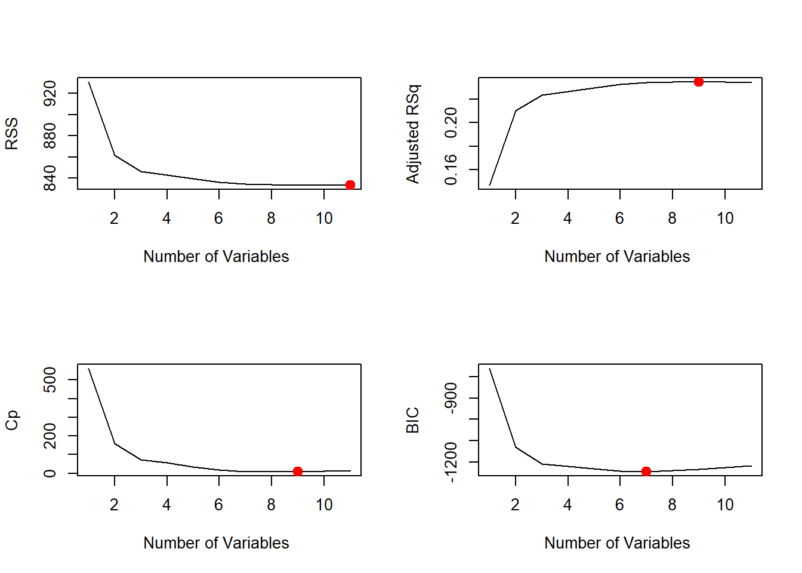
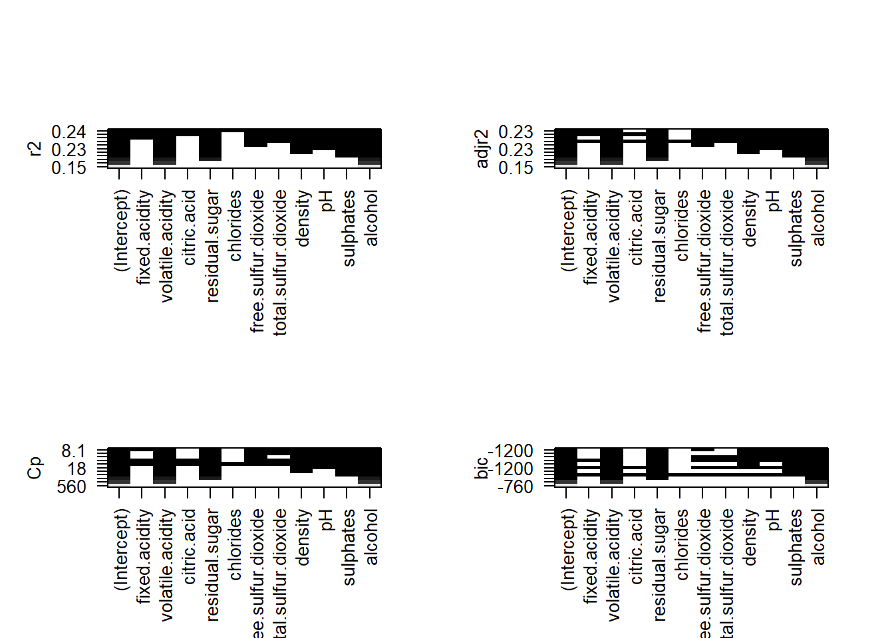

##
## WW.LR.pred bad good
## bad 814 398
## good 826 2860## [1] 0.7501021##
## LR.pred2 bad good
## bad 810 395
## good 830 2863## [1] 0.7498979##
## LR.pred3 bad good
## bad 812 385
## good 828 2873## [1] 0.7523479## integer(0)## integer(0)## integer(0)
## integer(0)
## (Intercept) volatile.acidity residual.sugar density
## 39.25770157 -1.19891450 0.02773128 -39.73713273
## pH sulphates alcohol
## 0.18486383 0.27289280 0.12749724## [1] -761.214 -1131.522 -1208.768 -1218.718 -1232.185 -1243.163 -1245.331
## [8] -1239.797 -1233.482 -1225.040 -1216.585##
## LR.pred4 bad good
## bad 810 395
## good 830 2863## [1] 0.7498979##
## LR.predBIC bad good
## bad 820 388
## good 820 2870## [1] 0.7533687##
## LR.pred5 bad good
## bad 827 389
## good 813 2869## [1] 0.7545937## (Intercept) volatile.acidity residual.sugar density
## 39.25770157 -1.19891450 0.02773128 -39.73713273
## pH sulphates alcohol
## 0.18486383 0.27289280 0.12749724## (Intercept) volatile.acidity residual.sugar free.sulfur.dioxide
## 37.358810812 -1.179685823 0.025994851 0.001214064
## density pH sulphates alcohol
## -37.872617458 0.174515730 0.260075576 0.132030532